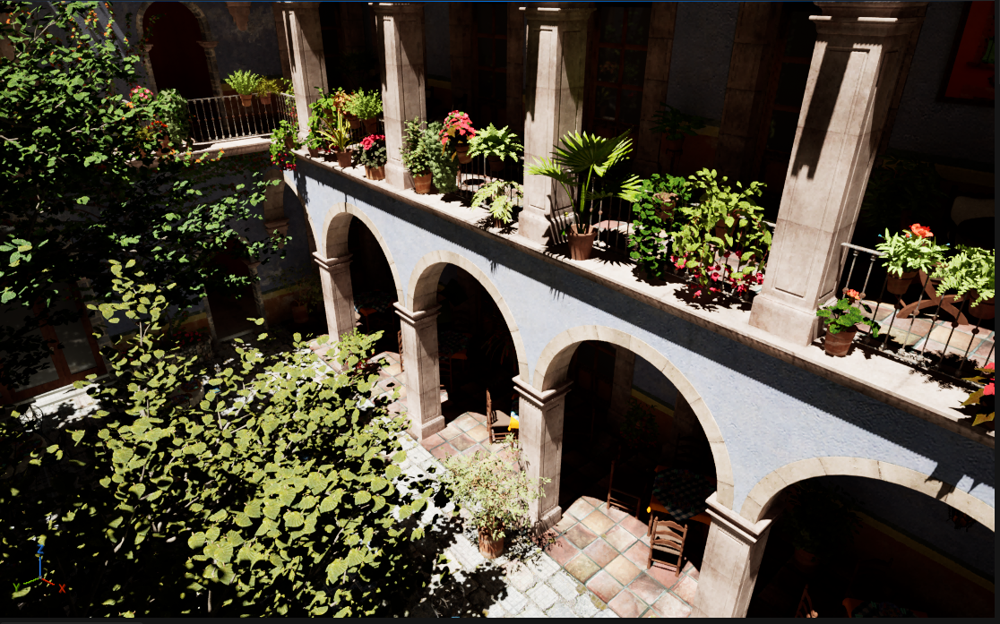
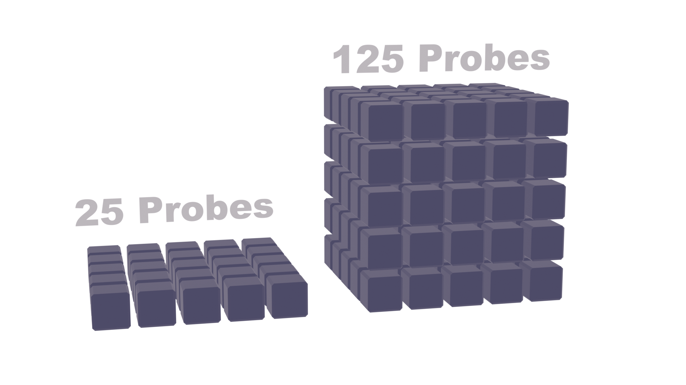

Intro
Radiance cascades is a technique that massively improves global illumination without much extra
cost or
accumulation.
In this article I'll go over the recent technique of ray splitting which allows the use of RC
(Radiance cascades)
in 3D without huge costs, and how to
implement this.
Radiance Cascades
For this article i'll assume you already know the basics of RC,
if not I really recommend the
interactive tutorial from jason.today or the article from
MAXhttps://m4xc.dev/articles/fundamental-rc/
Here is a quick recap as well
RC Recap
The main point of RC is combining the samples/rays for our GI in a way that utilizes them most
effectively.
This results in a more correct output with less samples.The way of combining
this
relies on the Penumbra hypothesis.
Which states that, when you are
close to a light source you need less rays (less angular resolution) to find the light.

Inversely when you are close to a light you need more probes (spatial resolution) to get correct shadows
By merging layers ranging from (high resolution, low direction count) count to (low resolution,
high direction count) that correspond to a interval of the ray.
we get best of both
Probes
Problems of 3D
RC Requires storing our light into a grid of probes,
This becomes a problem in 3D due to the
massive memory cost that introduces. since probe counts scale ^3

Even if we would just put this around the camera it would cost way too much memory to get a
decent resolution.
Luckily we only need probes where we need light, which is on all visible
surfaces.
So we need a way to only put probes on visible geometry.

Sparse probes
To only spawn probes on visible surfaces, we reconstruct worldpositions from the screen.
We
round these positions to a grid of cells
To store our light in these cells we need a buffer of probes.
To allocate this we use a
hashtable, creating a hash for each cell allows us to quickly allocate a slot for each of these
without much fighting between threads.
We also store a AppendBuffer with a list of the probes
we allocated, this will be used later to launch our next passes indirectly.
(this somewhat goes against the use of the hashtable, but the table
will be needed more later)
We clear and fill this table every frame and with this
we get a table of sparsely allocated probes.
probes
// HLSL, Compute:
//For now most kinds of hash tables are fine
#include "HashTable.hlsl"
// TODO reconstructing and allocating
We can visualize/debug our probes in a seperate pass
// HLSL, Compute:
//For now most kinds of hash tables are fine
#include "HashTable.hlsl"
// TODO Displaying
Gather
TODO: gather
Cascades
TODO: cascades
LODs
TODO: LODs
Why?
TODO: why LODs
Rays
From probes vs from screen
TODO: tracing from probes vs screen
Splitting into intervals
TODO: split into intervals
Putting rays into probes
TODO: how to put into probes
// HLSL, Compute:
// TODO
Merging
TODO: merging
// HLSL, Compute:
// TODO
Temporal
Why?
TODO: why temporal
Stable hash table
TODO: stable hash table
Multi bounce
TODO: multi bounce
Basic optimizations & improvements
LOD blending
TODO: LOD blending
Choosing directions
TODO: choosing directions, sequence
Groupshared & wave intrinsics
TODO: groupshared & wave
// HLSL, Compute:
// TODO
Performance & Conclusions
TODO: performance & conclusions